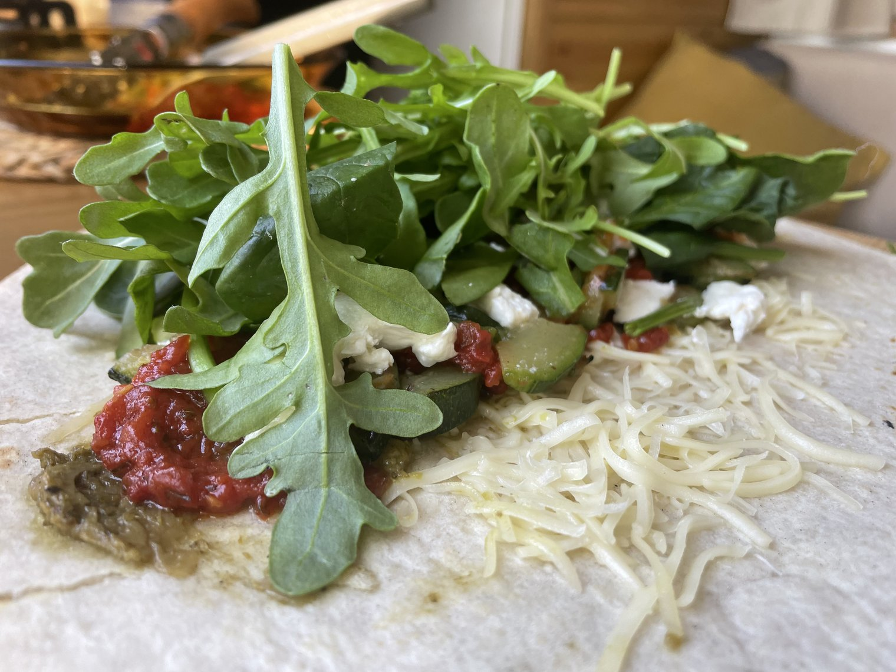

Piadina con pesto, tomate, calabacín, rúcula y quesos
Ingredients
2×
- 2 tomates frescos
- aceite de oliva
- sal
- 1 calabacín
- 2 piadinas
- 2 cdas de pesto
- 50 g de emmental rallado
- 50 g de queso chèvre cremoso
- un puñado de rúcula y espinacas frescas

Preparación
Paso 1
Sofreír 2 tomates frescos picados con aceite de oliva y sal hasta que se reduzcan. Aparte, saltear 1 calabacín en dados.
Paso 2
Calentar 2 piadinas en una sartén.
Paso 3
Untar con 2 cdas de pesto y poner el sofrito de tomate, el calabacín, 50 g de emmental rallado, 50 g de queso chèvre cremoso y un puñado de rúcula y espinacas frescas.